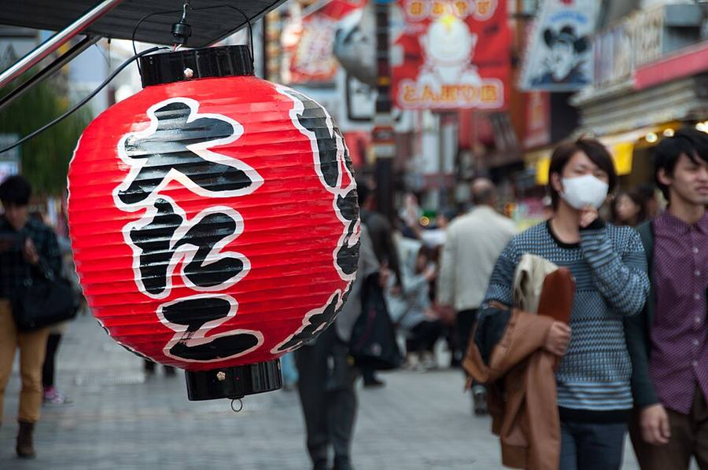
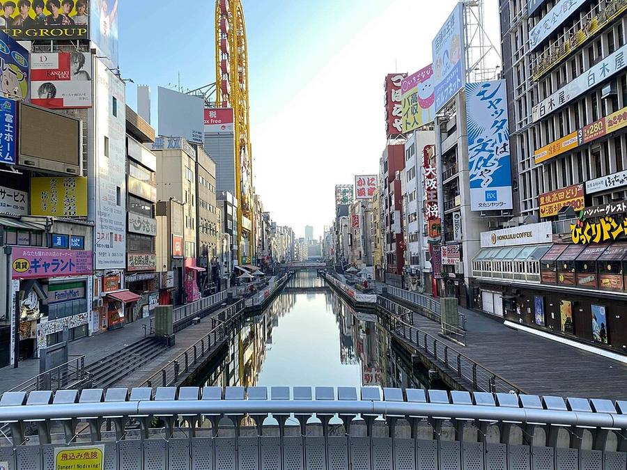
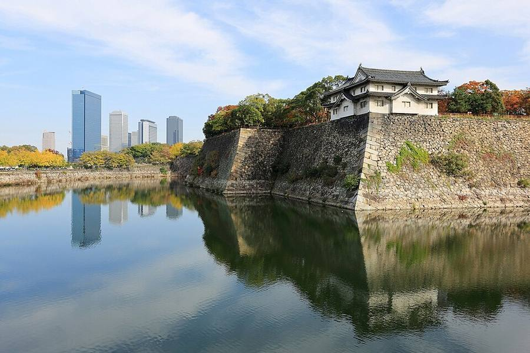

Osaka
После Kyoto, 2-3 дня: еда, живые улицы, замок
Зачем и сколько
Почему включаю: еда и живые улицы, а главное - удобная база после Kyoto: отсюда летят домой (E1), едут на юг (E2) и летят на Okinawa (E3).
Сколько дней и почему: 23-25.10: по прогнозу 23-24.10 сильный дождь, эти дни под работу, 25.10 город.
Как добраться: из Kyoto 11:00 → 11:28 (28 мин); в Hiroshima 1 ч 38 мин.
Погода в твои дни (Open-Meteo, 14.10 10:27): Osaka: +20/+14, 🌧 дождь 116 мм; Osaka: +19/+11, ☀️ сухо; Osaka: +21/+11, ☀️ сухо



.jpg){kind=link}






- Dotonbori: канал, неон, уличная еда.
- Рынок Kuromon: морепродукты и закуски.
- Shinsekai: старый район с башней Tsutenkaku.
- Замок Osaka и смотровая Umeda Sky.
- Музей этнологии Minpaku (парк Expo'70): большой зал айнов, 10:00-17:00, закрыт по средам, 780 ¥ (сайт музея, проверено 27.09).
Из Kyoto 22 минуты на Shinkansen. Из Osaka до Himeji 29 минут.
Видео
 THE Dotonbori Guide: What the Others Don't Tell You! 🐙🌃🏃♂️
THE Dotonbori Guide: What the Others Don't Tell You! 🐙🌃🏃♂️PiQtour Japan · 17 мин
 THE Shinsekai Osaka Guide: Better than Dotonbori?!
THE Shinsekai Osaka Guide: Better than Dotonbori?!PiQtour Japan · 20 мин
 Osaka Walk – Kuromon Market to Dotonbori | Japan Walking Tour | 4K HDR
Osaka Walk – Kuromon Market to Dotonbori | Japan Walking Tour | 4K HDRTHE JAPAN WALK · 41 мин
Страница собрана 12-13.10, блок «Зачем и сколько» и прогнозы обновлены 14.10.2026. Поезда и автобусы: Yahoo!乗換案内 (запросы 13-14.10). Погода: Open-Meteo. Листва: Weathernews. Часы и цены: официальные сайты и japan-guide.com. Видео: YouTube. Фото: Wikimedia Commons, автор и лицензия под каждым. Отели не проверялись и не бронировались.